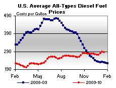

Released on January 21, 2010
(Next Release on January 27, 2010)
Fuel Ethanol Margins: 2009 Update
The November 26, 2008, edition of This Week In Petroleum looked at profit margins for the dry mill fuel ethanol industry, pointing out the boom-and-bust cycles that had occurred. In 2009, ethanol producers’ margins continued to fluctuate as shown in Figure 1. The variable cost margin plotted in Figure 1 (“Ethanol Margin”) represents the difference between Chicago spot prices for ethanol (revenue) and the variable cost inputs of production, converted to their ethanol price equivalent in cents per gallon. It is sometimes referred to as the “producers’ margin”.1
Sources: OPIS, Hart, Bloomberg.
The price (revenue) component of ethanol margins is influenced by the underlying ethanol supply-demand balance and by the price of gasoline, since nearly all fuel ethanol is blended with gasoline at up to 10 percent volume. When ethanol supply capacity is closely balanced with ethanol demand, the ethanol price to blenders after accounting for the tax credit typically follows the price of gasoline. However, when ethanol supply capacity is much greater than demand, the price of ethanol tends to drop below the gasoline price and settle closer to its variable production cost. This has been the situation in the ethanol market for much of the time since late 2007 when prices dropped in the wake of capacity expansions that were pushing ethanol supply capacity well past demand (see the November 18, 2009, edition of This Week in Petroleum. Figure 1 shows that ethanol prices (minus the blender tax credit)2 have been below gasoline prices for most of the time since then, and Figure 2 shows how ethanol prices followed variable costs over the recent past.
Sources: OPIS, Hart, Bloomberg.
*Based on yield of 2.68 gallons of fuel ethanol per bushel of corn, changing to
2.75 in 2007. Dried Distiller’s Grains with Solubles (DDGS) are a byproduct of
ethanol production that is sold as animal feed.
Ethanol producers’ margins averaged 15 cents per gallon of ethanol during 2008, and about 8 cents per gallon from January through June 2009. Low ethanol production margins contributed to the extended shutdown of a number of plants beginning in late 2008, reaching over 100 thousand barrels per day (almost 15 percent of total nameplate capacity) by the end of the first quarter of 2009. The shutdowns allowed those plants still operating to run at an average utilization rate of about 95 percent, and ethanol production margins began to rise during the second half of 2009, averaging almost 40 cents per gallon. California may have also provided an extra boost to prices and ethanol production margins towards the end of the year as gasoline blenders increased ethanol content from 6 percent by volume to 10 percent, ahead of the implementation of a new California gasoline blending model that will permit 10 percent fuel ethanol in motor gasoline blends.3
Fuel ethanol margins peaked in mid-November at 68 cents per gallon, the highest level in more than two years, but they then slumped sharply to about 30 cents per gallon as ethanol prices fell in the last three weeks of the year, possibly as a result of the restart of some of the shutdown plants and a seasonal drop-off in gasoline (and thus ethanol) demand. Ethanol margins are likely to remain volatile. Still, with the renewable fuel mandate increasing in 2010, and with California moving to the 10 percent blending level in gasoline, demand for ethanol will increase, and ethanol producers may fare better in 2010 than in the first half of 2009.
Slight Downturn for U.S. Average Gasoline and Diesel Prices
The U.S. average price for regular gasoline dropped a penny to $2.74 per gallon, $0.89 higher than the average a year ago. On a regional basis, price changes were mixed. The East Coast price of $2.75 per gallon moved up less than a penny, while the price in the Rocky Mountains jumped up four cents to $2.62 per gallon. The price on the Gulf Coast was essentially unchanged at $2.62 per gallon. Prices in the Midwest and on the West Coast dropped, moving down over a penny on the West Coast to $2.95 per gallon and dropping nearly five cents to $2.68 per gallon in the Midwest. The average in California also fell, slipping two cents to $3.03 per gallon.
Diesel prices also slipped somewhat, with the national average falling a penny to $2.87 per gallon, $0.57 above the price last year. The average on the East Coast was essentially unchanged at $2.92 per gallon. In the Midwest, the average dipped a penny to $2.83 per gallon. On the Gulf Coast and on the West Coast, the averages dropped about two cents to $2.83 and $2.95 per gallon, respectively. In the Rocky Mountains, the price climbed more than a penny to settle at $2.83. The average in California dipped two cents to $3.01 per gallon.
Propane Stocks Continue to Sink
U.S. inventories of propane posted their largest drop of the current heating season with a 4.8 million barrel stock draw, leaving inventories at an estimated 41.1 million barrels. The Gulf Coast region led the decline with a 2.0 million barrel stock draw. The Midwest region was close behind with a 1.9 million barrel decline. The East Coast regional stocks drew 0.9 million barrels and the Rocky Mountain/West Coast region decreased slightly. Propylene non-fuel use inventories increased their share of total propane/propylene stocks from 7.6 percent to 8.3 percent.
Residential Heating Oil Prices Decrease
Residential heating oil prices decreased during the week ending January 18, 2010. The average residential heating oil price dropped 3.2 cents per gallon to reach 295.2 cents per gallon, which was 53.1 cents per gallon higher than the same time last year. Wholesale heating oil prices fell 15.0 cents per gallon to reach 214.1 cents per gallon, 54.3 cents per gallon higher than at this time last year.
The average residential propane price rose 1.2 cents per gallon to reach 267.2 cents per gallon. This was an increase of 36.0 cents per gallon compared to the same period last year. Wholesale propane prices dropped 21.7 cents per gallon to reach 134.8 cents per gallon. This was an increase of 44.3 cents per gallon when compared to the January 19, 2009 price of 90.5 cents per gallon.
_______________1 Ethanol analyses sometimes refer to both producers’ margins and blenders’ margins. Producers’ margins use ethanol price without Federal excise tax credits to estimate revenues, while blenders’ margins compare ethanol price net of Federal excise tax credits to gasoline price.
2 H.R. 4520, the American Jobs Creation Act of 2004 (JOBS Bill), created the Volumetric Ethanol Excise Tax Credit (VEETC), which allows blenders of ethanol into gasoline to take a tax credit of 45 cents per gallon for each gallon of ethanol used. See http://www.afdc.energy.gov/afdc/progs/view_ind_fed.php/afdc/399/0.
3 California has a protocol allowing blenders to use the new model before the December 31, 2009 effective date.
Text from the previous editions of “This Week In Petroleum” is now accessible through a link at the top right-hand corner of this page.
| Retail Prices (Cents Per Gallon) | |||||||
|  | |||||||
| Retail Data | Changes From | Retail Data | Changes From | ||||
| 01/18/10 | Week | Year | 01/18/10 | Week | Year | ||
| Gasoline | 273.9 | Heating Oil | 295.2 | ||||
| Diesel Fuel | 287.0 | Propane | 267.2 | ||||
| Spot Prices (Cents Per Gallon*) | |||||||||||||||||||||||||||||||||||
|
|||||||||||||||||||||||||||||||||||
| *Note: Crude Oil WTI Price in Dollars per Barrel. | |||||||||||||||||||||||||||||||||||
| Stocks (Million Barrels) | |||||||
| Stocks Data | Changes From | Stocks Data | Changes From | ||||
| 01/15/10 | Week | Year | 01/15/10 | Week | Year | ||
| Crude Oil | 330.6 | Distillate | 157.1 | ||||
| Gasoline | 227.4 | Propane | 41.138 | ||||